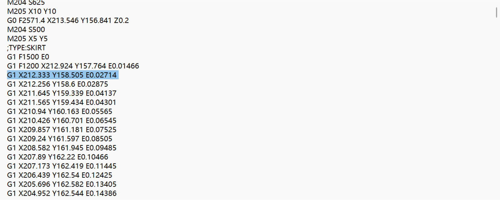

3D printing
*Material
poly(ether-ether-ketone) has excellent mechanical and heat
resistance properties, and is widely used in aerospace,
automotive, medical equipment and other fields. 3D printing
technology can make this material into parts with complex shapes,
such as turbine blades, engine components, and more. In addition,
new aerospace materials such as carbon fiber composites are
difficult to process with conventional technologies, but 3D
printing can greatly shorten the production process by enabling
the overall molding of complex parts.
*Application
In the field of surgical preparation, 3D printing is making waves.
Medical professionals can now create 3D models of patient anatomy
to better plan complex surgeries. For example, the heart is
structurally complex, and 3D printed models can accurately
replicate the typical anatomy of cardiovascular diseases such as
congenital heart disease. This advancement can usher in a new era
of personalized medicine by enabling more precise surgeries,
reducing risk, and reducing recovery time.

*Technology
Associate Professor Zhang Hao, Academician Li Jinghong of the
Department of Chemistry of Tsinghua University, Associate Professor
Lin Linhan and Professor Sun Hongbo of the Department of Precision
Instruments jointly developed a new method of 3D printing of
nanomaterials, referred to as 3D Pin, which realizes the nanoscale
3D printing of a variety of inorganic nanomaterials by introducing
photosensitive nitrogen bin small molecules, with a high proportion
of inorganic components in the structure, and excellent mechanical
properties and tunable optical properties.
Use slice software to setting parameter
1.Use Cura

2.Click on the red box area to import 3D model files, such as.obj
files

3.Click on the red box area to Rotate the 3d print so that it lies
flat
on a horizontal plane
on a horizontal plane
4.Click on the red boxed area to enlarge the 3d print after rotating
it

5.Click on the red box and adjust the print parameters in the green
box

6.Click on the red boxed area to slice

7.Just click on the red boxed area to save the .gcode format

Use 3D printer to manufacture it

Postprocess the surface
Remove the excess with a pencil sharpener and sandpaper.
Read gcode

g1 x212.333 y158.505 e0.02714
It means:
G1:
This is a linear interpolation instruction, which means that the control
machine will move along a straight line to the target position at a set speed,
and will perform machining, such as extruding material (3D printing) or making
cuts, as it moves.
X212.333:
The X-coordinate of the target position is 212.333 millimeters
(or other units, depending on your machine settings).
Y158.505:
The Y-coordinate of the target position is 158.505 mm (or other units).
E0.02714:
E usually stands for Extruder and indicates that the extruder needs
to extrude 0.02714 mm of material (or other units) during the move to the target
position.
To summarize:
This G-code instruction instructs your machine to move in a straight line to
the coordinates (X=212.333, Y=158.505) and to extrude 0.02714 mm of material
in the process.
It means:
G1:
This is a linear interpolation instruction, which means that the control
machine will move along a straight line to the target position at a set speed,
and will perform machining, such as extruding material (3D printing) or making
cuts, as it moves.
X212.333:
The X-coordinate of the target position is 212.333 millimeters
(or other units, depending on your machine settings).
Y158.505:
The Y-coordinate of the target position is 158.505 mm (or other units).
E0.02714:
E usually stands for Extruder and indicates that the extruder needs
to extrude 0.02714 mm of material (or other units) during the move to the target
position.
To summarize:
This G-code instruction instructs your machine to move in a straight line to
the coordinates (X=212.333, Y=158.505) and to extrude 0.02714 mm of material
in the process.